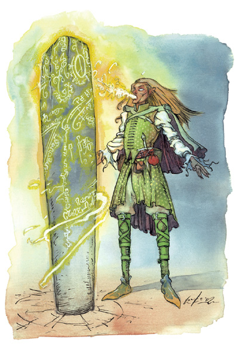

精灵高等法师(Elven High Mage)

精灵对于学习魔法有着无人能比的热情，而精灵高等法师则是精灵一族中对魔法的奥秘最为着迷的一群。
精灵高等法师是创造他们族里独门的传奇法术－可以覆盖整座城市的永久防御力场迷锁mythals－的大师。每个法师都会把学习传奇法术当作是终生的志向，而精灵对于这方面可说是别具天赋。每个现存的精灵高等法师通常都会仔细的观察那些有潜力成为高等法师的晚辈长达几十年，以求能发现其性格里最微小的缺点。如此一来才能使高等魔法的秘密不会外泄（只有不到10个精灵高等法师知道高等魔法High Magic仍然存在的秘密，而其中可以施展传奇法术Epic spell的更是凤毛麟角）。
所有的精灵高等法师都是日精灵、月精灵或木精灵，他们都是强大的法师或术士。其他种族根本没有机会学习精灵最高深的秘密。
精灵高等法师通常都把他们的时间投进对传奇法术的研究之中、有系统的探寻几近失传的古老精灵轶闻、或是不停的加强保密工作以确使精灵的秘密不会外泄；成为高等法师的精灵玩家则会发现他们几乎没有出外冒险的时间。由于拥有强大的力量，当发生危机时，高等法师通常会站出来保卫他们的同胞。
精灵高等法师的设定与传奇等级手册Epic Level Handbook有关，所有的精灵高等法师都一定是传奇等级角色Epic Level Character。
生命骰数：d4
职业条件：
种族：日精灵、月精灵、木精灵
技能：神秘知识Knowledge（arcane）25级，法术造诣Spellcraft25级
专长：传奇技能专攻－神秘知识，传奇技能专攻－法术造诣
[附注－传奇技能专攻Epic Skill Focus[传奇专长Epic Feat]
先决条件：该技能必须有20级
效果：所有相关技能检定+10
特殊：可以多次选择这个专长，但是每次必须选择不同的技能]
施法能力：可以施展9级秘术
特殊：必须通过所有现存精灵高等法师的审核
职业技能：
学习语言Speak Language
以体质为关键属性者：集中心神Concentration
以智力为关键属性者：手艺Craft、解读文件Decipher Script、知识Knowledge、法术造诣Spellcraft
以智慧为关键属性者：专业Profession、察颜观色Sense Motive
以魅力为关键属性者：交涉Diplomacy
每级技能点数：2＋智力调整值
职业特性：
擅长武器或盔甲 Weapon & Armor Proficiency：
精灵高等法师不擅长任何武器或盔甲
每日法术格/可知法术 Spells Per Day/Spells Known：
每当精灵高等法师上升到奇数级（1、3、5、7、9）时，他的施法者等级会上升，就像他的基础施法者等级上升一样，只不过不会获得基础职业的升级奖励（比如奖励专长）。由于精灵高等法师为传奇进阶职业，因此如果原角色的施法者等级超过20级，则不会获得新的每日法术格，只有施法者等级会上升。
如果原角色有不只一个基础施法职业，则当他获得新的施法等级时便必须决定要加到哪一个基础职业上。
传奇法术要素难度降低 Seed Affinity[特异能力]：
由于精灵大法师对魔法的研究十分精湛，因此他们可以更轻易的创造出强大的传奇法术。当第1、3、6、8级时，精灵高等法师可以选择一种传奇法术要素 Seed（详见传奇等级手册第2章），当高等法师以此要素研究传奇法术时，所需的法术造诣难度会得到－2奖励。因此高等法师可以在等级较低的状态下创出更强力的传奇法术。比方说，如果一个高等法师选择降低「放逐」banish要素的难度（原本难度为27，现为25），则当他创造混有「放逐」要素的传奇法术时，法术造诣检定的难度便会因此－2，他可以较早创出这个传奇法术。
[附注：传奇法术 Epic Spell与现有的普通法术不同，它是由各种法术要素Seed所组成的法术，施展时一律视为10级法术。比如说，一个拥有操纵死尸Animate Dead（难度23） 与杀戮Slaying（难度25） 要素的传奇法术有高达48的法术造诣难度，因此欲研究与施展此传奇法术的施法者必须至少拥有48级的法术造诣技能。]
创造传奇法术 Mythals Invention[特异能力]：
当第2、4、7、9级时，他可以自由选择一个传奇法术，他对这个传奇法术的研究进展所需花费的时间、金钱与经验值都将减为原来的四分之一。他不需要立刻投入资源研究这个传奇法术，但是他必须在下一次获得同一奖励之前投入研究（比如说，如果到第4级时他尚未使用第2级所获得的奖励，则第2级的奖励便会消失）。
奖励专长 Bonus Feat[特异能力]：
第5与10级时，精灵高等法师可以从下列表中选取一个奖励专长－
（仍然需要达到先决条件才能选择这些专长）
传奇炼金术Augmented Alchemy [传奇专长]
自动法术瞬发Automatic Quicken Spell [传奇专长]
自动默发法术Automatic Silent Spell [传奇专长]
自动省略手势Automatic Still Spell [传奇专长]
战斗施法Combat Casting [一般专长]
制造传奇武器与盔甲Craft Epic Magic Arms and Armor [传奇专长][物品制造专长]
制造传奇权杖Craft Epic Rod [传奇专长][物品制造专长]
制造传奇手杖Craft Epic Staff [传奇专长][物品制造专长]
制造传奇魔法物品Craft Epic Wondrous Item [传奇专长][物品制造专长]
提高制造速度Efficient Item Creation [传奇专长]
魔法威力提升Enhance Spell [传奇专长] [超魔法专长]
传奇专攻学派Epic Spell Focus [传奇专长]
传奇法术穿透Epic Spell Penetration [传奇专长]
施展传奇法术Epic Spellcasting [传奇专长]
－要有此专长才能研究与施展传奇法术
魔宠施法能力Familiar Spell [传奇专长]
铸造传奇戒指Forge Epic Ring [传奇专长]
无视法术材料Ignore Material Components [传奇专长]
进阶战斗施法Improved Combat Casting [传奇专长]
进阶法术升阶Improved Heighten Spell [传奇专长]
强化超魔法专长Improved Metamagic [传奇专长]
增加高级法术格Improved Sepllcasting [传奇专长]
强化法术威力Intensify Spell [传奇专长] [超魔法专长]
多重法术Multispell [传奇专长]
恒定散发Permanent Emanation [传奇专长]
抄录传奇法术卷轴Scribe Epic Scroll[传奇专长][物品制造专长]
专攻学派Spell Focus [一般专长]
法术增加Spell Knowledge [传奇专长]
法术熟捻Spell Master [一般专长]
施法机会攻击 Spell Opportunity [传奇专长]
法术穿透Spell Penetration [一般专长]
法术仿制Spell Stowaway [传奇专长]
转化法术Spontaneous Spell [传奇专长]
凝集法术Tenacious Spell [传奇专长]
附表：精灵高等法师
等级 职业特性 秘术施法者等级
1 传奇法术要素难度降低 +1
2 创造传奇法术
3 传奇法术要素难度降低 +1
4 创造传奇法术
5 奖励专长 +1
6 传奇法术要素难度降低
7 创造传奇法术 +1
8 传奇法术要素难度降低
9 创造传奇法术 +1
10 奖励专长
附注：书上没有列出豁免检定与基本攻击加值，估计应该与法师一样